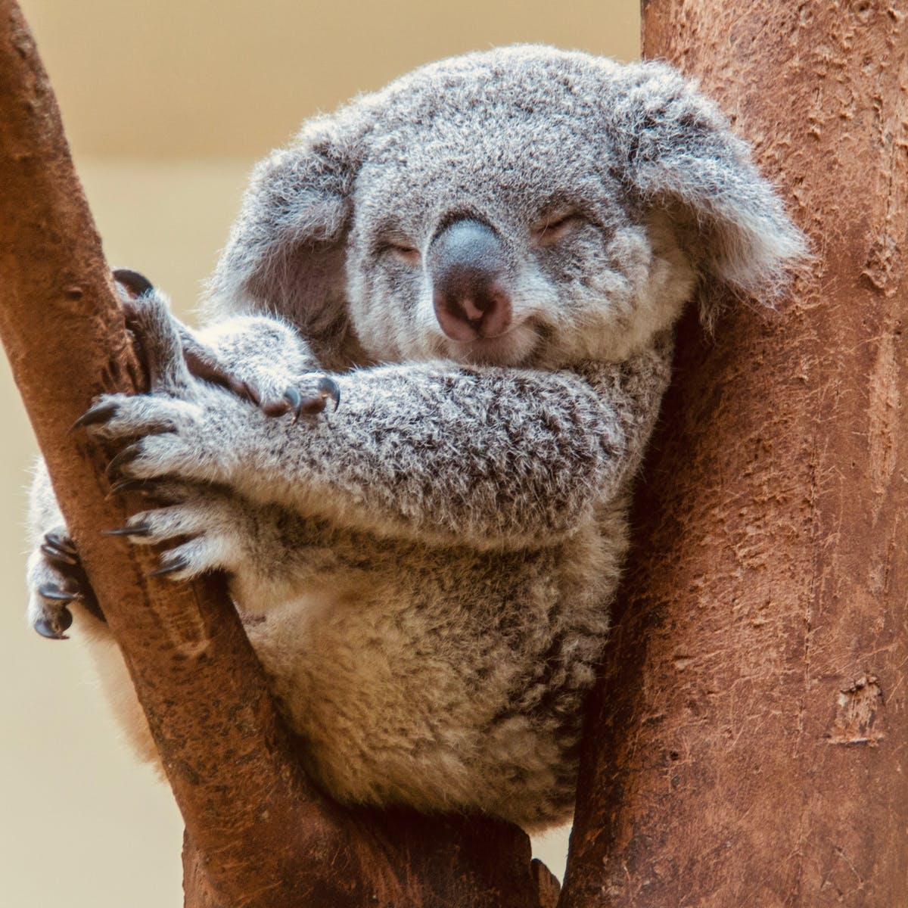
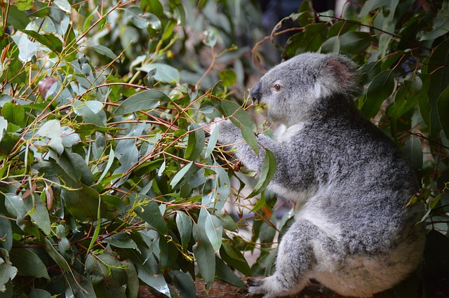

Koala Bear National Information Center
Welcome to the Koala Bear National Information Center! In this site you can learn about Koala bears, adopt a Koala, give to our foundation, sign up for our newsletter, or schedule a visit. Please take some time to explore the information provided in this site!
The Koala Bear National Information Center (KBNIC) is the principal non-profit, non-government organization dedicated to the conservation and effective management of the wild koala and its habitat.
The KBNIC was formed in 2006. Since our founding the KBNIC has grown from a small group of people interested in researching koala disease, to a well-known, global organization with a strong track record in strategic koala research, conservation and community education with a huge focus on mapping -- our absolute strength.
are disappearing. Loss of koala habitat and koala food trees (eucalyptus leaves) is the leading koala threat. Our cuddly koalas are loved around the world. Often called a koala bear, they are actually marsupials not koala bears. Please help koalas by supporting the Australian Koala Foundation.